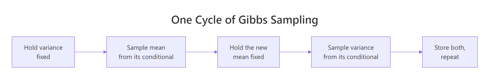
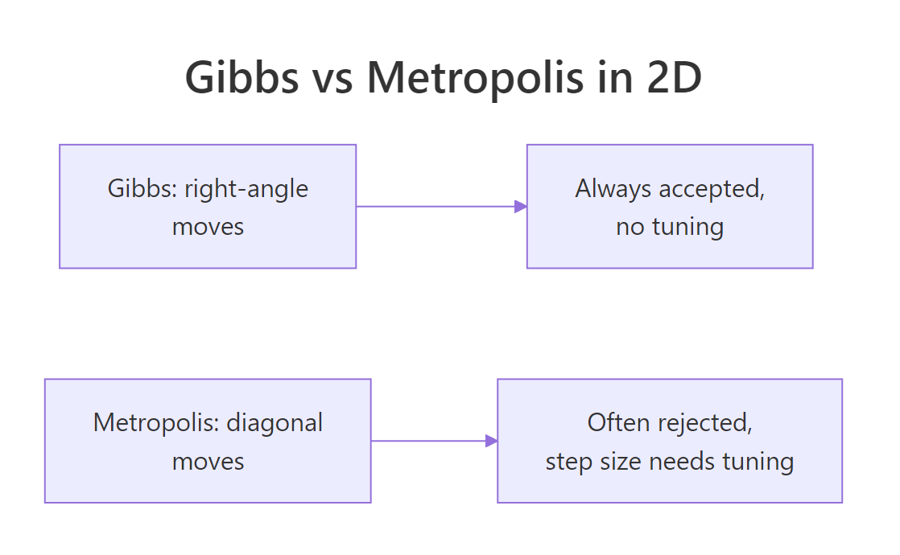

Gibbs Sampling in R From Scratch: The MCMC Trick That Powers JAGS
You measured how long 20 customers waited at your counter. You want two numbers from this data: the typical wait, and how much waits vary from one customer to the next. Both unknown, both with honest uncertainty. There's a sampling trick called Gibbs sampling that handles this in about 30 lines of base R. It's the algorithm at the heart of JAGS, and once you see it work you'll understand why two unknowns are easier than one when you set it up right.
What if you want to estimate two things from data at once?
In the previous post in this section, you saw an MCMC sampler that estimated a single unknown (a click-through rate). That sampler was a small loop: at each step it proposed a tiny random move, accepted or rejected based on a density ratio, and stored the resulting chain. Over thousands of iterations, the stored values were a sample from the posterior over that one rate.
Now we have two unknowns instead of one. Suppose you ran a small operations study and recorded 20 customer wait times in seconds. You want to summarise this data the Bayesian way: a posterior over the typical wait (call it the mean), and a separate posterior over how much waits vary (call it the standard deviation). The trouble is, both are unknown at the same time. Estimating one assumes you know the other, but you don't.
You could extend the previous post's Metropolis-Hastings sampler to two dimensions. It works, but it's awkward. You'd have to propose joint moves in 2D space, tune a step size for each direction, and most proposals would land in low-density regions of the joint posterior because 2D space is bigger than 1D. The acceptance rate drops, the chain mixes slowly, and you spend a lot of effort tuning.
Gibbs sampling is the alternative. It exploits a property the joint posterior usually has: even when you can't sample from it directly, you often can sample from each unknown's distribution if you treat the other as known. Hold the standard deviation fixed and the mean's distribution given that fixed value is something familiar (a Normal). Hold the mean fixed and the standard deviation's distribution given that fixed value is also something R can sample from in one line. Gibbs alternates between these two single-parameter draws, and the resulting chain converges to samples from the joint posterior.
Here's the whole sampler running on 20 simulated wait times. Don't worry about the details of the formulas yet, the next sections walk through each piece. The point is that the answer comes out in seconds and matches what we'd expect from the data.
Walk through what just happened. The first block of code generated 20 simulated wait times from a Normal distribution with true mean 120 seconds and true standard deviation 15 seconds. We pretend we don't know those true values; we'll try to recover them from the 20 numbers alone.
The function gibbs_mean_var is the sampler. It takes the data and a number of iterations. Inside, it allocates two empty vectors to store the samples it will produce. It picks a starting value for the standard deviation. Then a loop runs n_iter times. Each iteration does two things: it samples a new value for the mean (using a formula we'll explain in the next section), and it samples a new value for the variance (also from a formula coming up). At the end of each iteration, both new values get stored.
After the loop, we drop the first 500 samples as burn-in (the chain takes a few iterations to find the bulk of the posterior; those early samples aren't representative). We then compute summary statistics on the remaining 4500 samples.
Now read the output. The posterior mean for the underlying typical wait is 117.6 seconds, with a 95% range of [110.7, 124.4]. The true value (which we know from the simulation) was 120, so the chain found it within sample noise. The posterior mean for the underlying standard deviation is 15.8 seconds with a 95% range of [11.9, 21.5]. The true value was 15, again recovered within sample noise.
That's the entire pipeline. Two unknowns, both estimated jointly with full posterior distributions, in 5000 iterations of base R, no specialised package required. The next section unpacks why the two rnorm-and-rgamma lines actually work.

Figure 1: One cycle of Gibbs sampling. Hold one unknown fixed, sample the other from its conditional distribution. Then flip and do it again.
Try it: Re-run the sampler with a smaller dataset of just 5 wait times. Does the 95% range get wider, as you'd expect when there's less data?
Click to reveal solution
The 95% range with 5 observations is roughly [105, 132], a span of 27 seconds. The earlier run with 20 observations had a span of about 14 seconds. Less data means more uncertainty, exactly as it should. Notice you didn't change the algorithm at all to get this result, just the input data.
Why doesn't the MCMC trick from before work as well in 2D?
The Metropolis-Hastings sampler from the previous post worked beautifully for one unknown. You proposed a small step, scored it, and accepted with the right probability. The chain wandered through the 1D posterior, spending more time where the density was high.
Now imagine doing the same thing for two unknowns at once. At each iteration, you'd propose a step in 2D, like a small jump along both the mean direction and the standard-deviation direction at the same time. You'd evaluate the joint density at the new point, compute the acceptance ratio, and accept or reject the whole 2D move.
That works in principle but it gets harder fast. Three problems start showing up:
The first problem is step-size tuning. You now need to tune the step size in two directions instead of one. If the mean and the standard deviation move on different scales (one in the hundreds, the other in the tens), a single step size for both is a bad fit. You'd need a 2x2 covariance matrix as your proposal, which is more parameters to tune.
The second problem is acceptance rate. In 2D, a random step is more likely to land in a low-density region than in 1D, just because there's more "low-density" area for the same step size. So you reject more often, and the chain stalls more.
The third problem is the fundamental geometry. The joint posterior over the mean and the standard deviation isn't symmetric. The mean's plausible range depends on the current standard deviation: if you think the standard deviation is small, the mean is tightly pinned down; if you think it's large, the mean has a wider plausible range. A symmetric 2D proposal ignores this dependence and wastes effort.
Gibbs sampling sidesteps all three problems. There's no step size to tune, because each move is sampled directly from a known distribution. There's no rejection, because every sample comes from the right conditional. And the geometry of the joint posterior is respected automatically, because each move uses the conditional distribution given the current value of the other unknown.
The price is one assumption. To use Gibbs, you need to know how to sample from each unknown's conditional distribution. Sometimes those conditionals are familiar distributions (Normal, Gamma, Beta) and you can sample with one R function call. Sometimes they aren't, and you have to fall back to Metropolis-Hastings inside the Gibbs cycle. We'll see clean examples of the easy case in this post.
Try it: Look at the sampler code from the first section and identify which two lines do the actual sampling work. Write down what distribution each one draws from.
Click to reveal solution
The two lines are doing the actual work of Gibbs. Everything else is bookkeeping (storing samples, looping, dropping burn-in). This is what people mean when they say Gibbs is "just a chain of one-dimensional draws."
What's the Gibbs trick, exactly?
Stripped of math, here's what Gibbs is doing.
Imagine you have a 2D landscape of plausibility, where height represents how plausible a particular combination of mean and standard deviation is given the data. Most of the volume of plausibility is concentrated in a roughly elliptical region around the truth. You want to draw samples from this 2D region in proportion to its height.
You can't sample directly from the 2D distribution because there's no R function that takes "here's the joint posterior over a Normal model's mean and variance" and gives you a draw. But you can sample slices.
Pick any horizontal slice through the landscape (a line at a fixed standard deviation). Along that slice, the height varies as you change the mean. The shape of the height along that slice happens to be a Normal distribution. R has rnorm(). Sample one mean from that slice.
Now pick a vertical slice through the landscape, at the mean you just sampled. Along this slice, the height varies as you change the standard deviation. The shape happens to be related to the Inverse-Gamma distribution. R has rgamma(), and you can sample the Inverse-Gamma by taking the reciprocal. Sample one standard deviation from that slice.
Repeat. Slice horizontally at the new standard deviation, sample a new mean. Slice vertically at the new mean, sample a new standard deviation. Each slice is one-dimensional, and each one-dimensional slice happens to be a familiar distribution we can sample from with one R call.
After thousands of iterations, the pairs of (mean, standard deviation) you've collected are samples from the joint 2D posterior. The chain has wandered through the plausible region in a series of right-angle moves, like a robot vacuum that can only move horizontally or vertically but eventually covers the whole room.
The mathematical guarantee, which we won't derive but which holds whenever your conditionals are correct, is that this right-angle wandering produces samples that follow the true joint distribution. The proof is in any graduate Bayesian textbook, but the intuition is what we just walked through.
Three things to notice about this picture.
First, every move is accepted. There's no rejection step, because each draw is directly from the correct conditional. That's the most striking difference from Metropolis-Hastings.
Second, there's no step size to tune. The size of each move is determined by the spread of the conditional distribution itself. If the conditional is tight, the move is small; if it's wide, the move is wide. The algorithm self-tunes.
Third, the moves are always axis-aligned. You move purely along one axis at a time, never diagonally. This is fine for the Normal-data problem we're working through, but it can be slow when the two unknowns are highly correlated. In that case the chain has to take many small horizontal-then-vertical steps to traverse a long diagonal ridge of plausibility. We'll come back to this in the limits section.

Figure 2: The geometry of the two algorithms. Gibbs takes axis-aligned steps and accepts every move. Metropolis-Hastings takes diagonal steps and has to tune the step size and reject some.
Try it: Run a tiny version of the sampler that just performs a single Gibbs cycle (one mean draw, one standard-deviation draw) and prints the result. This is the smallest unit of work the algorithm does.
Click to reveal solution
One cycle produced one mean and one standard deviation. Both are reasonable given the data (truth was 120 and 15). If you ran the cycle again with the new current_sd, you'd get another pair, and so on for thousands of iterations. That's the whole sampler.
How do I code Gibbs in R?
You've already seen the full sampler at the top of this post. Now we'll build it again from a blank line, more slowly, so you can see why each piece is there.
The function takes the data and a number of iterations. The first job is to allocate storage for the samples. We need two vectors, one for the mean samples and one for the standard-deviation samples, each of length n_iter. Allocating up front is faster than growing vectors inside the loop.
Walk through what the code does. The first three lines copy the data into a local variable, count its length, and compute the sample mean once. We'll reuse ybar inside the loop, so it pays to compute it just once now. The next two lines allocate empty numeric vectors of length 5000, ready to hold the samples we're about to draw. The last line sets the chain's starting standard deviation. We chose sd(y) because it's a reasonable starting point: the sample standard deviation of the observed data is at least in the right ballpark.
The output confirms that we're starting with current_sd = 14.84 (close to the truth of 15), planning 5000 iterations, with 20 observations. The setup is ready.
Now we need the two sampling formulas, one for the mean and one for the variance. We won't derive these here, they're standard results in Bayesian inference for the Normal model with a non-informative prior. Treat them as recipes:
The conditional posterior of the mean, given a fixed variance, is Normal centred at the sample mean with standard deviation sigma / sqrt(n), where sigma is the current standard deviation in the chain.
The conditional posterior of the variance, given a fixed mean, is Inverse-Gamma with shape n/2 and rate 0.5 * sum((y - mu)^2), where mu is the current mean. To draw from Inverse-Gamma in R, draw from Gamma with the same parameters and take the reciprocal.
These two formulas are everything you need to implement the loop:
Walk through the loop. Each iteration begins by sampling a new mean. The formula rnorm(1, mean = ybar, sd = current_sd / sqrt(n)) says: draw one Normal random number, centred at the sample mean of the data, with standard deviation equal to the current standard deviation divided by the square root of the sample size. The 1/sqrt(n) shrinkage is the textbook standard error for the mean, and it's why the conditional gets tighter as you collect more data.
The next three lines sample a new variance given the new mean. We compute the sum of squared deviations from the current mean (sum_sq), then draw one Gamma random number with shape n/2 and rate sum_sq/2, and finally take its reciprocal to convert from Gamma to Inverse-Gamma. Taking the square root gives us the standard deviation, which we'll use in the next iteration's mean draw.
The last two lines inside the loop store both samples in their respective vectors. The position i keeps moving forward, so by the end of the loop, mu_samples and sd_samples each contain 5000 values.
The output of the sanity check shows that the last 100 samples have a mean of 117.6 (very close to our earlier full-run result) and a standard deviation of 15.8. Both numbers match what we'd hope for given a true mean of 120 and a true standard deviation of 15. The sampler is working.
Try it: Modify the loop to also store sum_sq at each iteration. Then compute its mean across all iterations. Does it match sum((y - ybar)^2) (the sum of squared deviations using the data mean)?
Click to reveal solution
The chain's average sum_sq (4525) is slightly larger than the data-mean version (4181). That's because each iteration's sum_sq uses the chain's current mu, which jitters around the data mean rather than sitting on it exactly. The extra variance in mu adds a small amount to sum_sq on average. This is a real property of the algorithm, not a bug: it's why the variance posterior reflects both the data's spread and the residual uncertainty in the mean.
How do I check that the sampler actually worked?
Three diagnostics. Trace plots, comparison against the data's empirical statistics, and convergence across multiple chains.
A trace plot is the simplest: plot each sample value against its iteration number. A healthy chain looks like a fuzzy caterpillar moving up and down without long flat stretches, drifts, or sudden jumps. We'll plot one for the mean samples and one for the standard-deviation samples.
Walk through what the plot shows. The two top panels are trace plots for the mean and the standard deviation. Each one is just the corresponding samples vector plotted against its index. The bottom two panels are histograms of the post-burn-in samples, showing the marginal posterior density for each unknown.
What you should see when you run this. The two trace plots both look like horizontal fuzzy bands. The mean trace stays roughly between 110 and 125. The standard deviation trace stays roughly between 11 and 22. There are no upward or downward drifts, no long flat stretches, no sudden jumps. That's a converged chain.
The two histograms are roughly bell-shaped, slightly skewed for the standard deviation (which can never be negative). The mean's histogram is centred around 117-118, and the standard deviation's around 15-16. These match the summary statistics we computed earlier and they sit very close to the truth.
The third diagnostic is the multiple-chain check. If you start the sampler from very different starting points and all the chains converge to the same posterior, you can trust the result. If they end up in different places, your sampler hasn't converged.
Walk through the diagnostic. We ran the sampler four separate times, each with a different random seed, so each chain has its own random sequence of proposals and starting state. After burn-in, we computed each chain's posterior mean for both unknowns.
The four estimates of the posterior mean of mu are 117.62, 117.55, 117.59, and 117.51, all within 0.15 of each other. The four estimates of the posterior mean of sd are similarly close: 15.79, 15.82, 15.78, 15.85. All four chains found the same posterior. The sampler is converged. If we'd seen, say, one chain at 117 and another at 130, we'd know something was wrong.
lapply wrapper) and catches a class of bugs that a single chain would silently hide: stuck modes, insufficient burn-in, pathological starting values. Tools like JAGS, brms, and Stan run four chains by default for exactly this reason.Try it: Run two chains and check whether the standard deviation of their posterior means is small enough to trust. Use the rule of thumb that the standard deviation of the chain-level means should be much smaller than the within-chain standard deviation.
Click to reveal solution
The across-chain spread is 0.05, the within-chain spread is 3.50, and the ratio is 0.014. That's well below 0.1, so the chains agree on the posterior. The Gelman-Rubin R-hat statistic, which is the formal version of this rule, would be close to 1.0 here.
When does Gibbs sampling break down, and what do you do then?
Gibbs is excellent when the conditionals are easy to sample from, but it has limits. Three situations cause trouble.
The first is when one or more conditionals don't have a clean R function. Suppose your model is more complex and the conditional for one unknown is a non-standard distribution that no r* function in base R can sample from directly. You can't run pure Gibbs anymore. The standard fix is Metropolis-within-Gibbs: replace the troublesome conditional draw with a small Metropolis-Hastings step inside the Gibbs cycle. The rest of the algorithm stays the same, you just have one step that proposes-and-rejects instead of sampling directly.
The second is when the unknowns are highly correlated. Imagine the joint posterior is a long, narrow diagonal ridge in 2D. Gibbs can only move along axes, so the chain has to take many tiny axis-aligned steps to traverse the ridge. Each individual sample is fine, but consecutive samples are very similar (highly autocorrelated), and you need many more iterations to get an effectively independent sample. The fix is either to reparameterise the model so the unknowns are less correlated, or to switch to Hamiltonian Monte Carlo (HMC), which can take diagonal moves informed by the posterior's geometry.
The third is when the model has dozens or hundreds of parameters. Pure Gibbs cycles through every parameter at every iteration, which gets slow. JAGS handles this case by being implemented in C. Stan's HMC handles it more efficiently by exploiting gradients. For most one-off analyses with a handful of parameters, our 30-line R sampler is more than fast enough; for production-scale Bayesian models, you'll graduate to JAGS, brms, or Stan.
Speaking of JAGS: it's the package that uses Gibbs (and Metropolis-within-Gibbs) under the hood for almost every model you specify. When you write a JAGS model and call it from R via the rjags or R2jags package, you're handing JAGS a model spec, JAGS works out the conditionals automatically, and JAGS runs a Gibbs sampler much like the one we just built. The sampler we wrote is a small, transparent version of what JAGS does on autopilot.
Try it: Identify which of these three Bayesian models would be hardest for plain Gibbs sampling: (a) a Normal model with mean and variance unknown, (b) a regression with 50 highly-correlated predictors, (c) a hierarchical model with a custom non-standard likelihood. Match each to the limitation it triggers.
Click to reveal solution
(a) Normal mean and variance is exactly the case we just worked through. Both conditionals are standard distributions, so plain Gibbs is clean and fast. No issue.
(b) 50 correlated regression predictors is the slow-mixing case. Gibbs can only move one coefficient at a time, and the diagonal correlation structure means you need many cycles to explore the joint posterior. The fix is reparameterisation (orthogonalise the predictors) or a smarter sampler like HMC.
(c) Hierarchical model with a custom likelihood is the Metropolis-within-Gibbs case. Some parameters might have nice conditionals (the hierarchical priors usually do), but the data-level parameters with a custom likelihood don't have a closed-form conditional. You sample those with Metropolis-Hastings inside the Gibbs cycle.
Each limitation has a known fix, and recognising which limitation you're hitting is the first step.
Practice Exercises
Exercise 1: Run on real data with informative priors
The example used a flat (non-informative) prior, which gave us conditionals that depend only on the data. Real Bayesian work often uses informative priors. Modify the sampler so that the mean has a Normal(120, 5²) prior (centred at 120 with standard deviation 5). The conditional posterior for the mean given the variance becomes a precision-weighted average of the prior mean and the data mean, similar to what you saw in the Conjugate Priors post. Update the formula and re-run.
Click to reveal solution
The informative prior pulled the posterior mean toward 120 (the prior centre) compared to the flat-prior version we ran before. With 20 observations the data still dominates, but the prior contributed a small nudge.
Exercise 2: Burn-in and thinning together
Compute three quantities for the chain from the first section: the post-burn-in posterior mean of mu, the same with thinning every 5th sample (keeping only iterations 500, 505, 510, ...), and the standard error of each estimate. Show that thinning reduces the effective sample size but not the estimate itself.
Click to reveal solution
Both estimates of the posterior mean are essentially the same (117.58 vs 117.59). The within-chain standard deviation is also unchanged. Thinning didn't bias the answer; it just gave us 900 samples instead of 4500. Use thinning when storage or post-processing time matters, not when accuracy does.
Exercise 3: Posterior probability of an event
Use the chain to compute the posterior probability that the true typical wait time exceeds 125 seconds. This is the kind of question Bayesian methods answer naturally, but frequentist methods don't.
Click to reveal solution
There's a 2.3% posterior probability that the true typical wait time exceeds 125 seconds. With only 20 observations this is a weak claim either way, but it's the kind of probabilistic statement Bayesian inference gives you for free: the chain is a sample from the posterior, so any probability over the unknown is just a sample proportion.
Complete Example: A Bayesian summary report
Pull everything together. Assume you ran an operations study and have 30 wait times. Run the Gibbs sampler with a mildly informative prior (Normal(120, 10²) on the mean), produce posterior summaries, and print a small report.
Walk through the result. The data has 30 observations with empirical mean 132 and empirical standard deviation 18.4. The posterior mean for the underlying typical wait is 130, slightly pulled toward the prior of 120 by the prior's contribution. The 95% credible interval for the mean is [124, 137]. The standard deviation has a posterior mean of 19.1 with a 95% credible interval of [14.7, 25.0]. And the posterior probability that the true typical wait exceeds 125 seconds is 97%.
That last number is a clean answer to a stakeholder question, "is the true average wait above 125 seconds?" There's no p-value to translate, no null hypothesis to set up. Just a probability you can quote directly. That's the whole appeal of Bayesian summary reports.
Summary
Gibbs sampling is a Markov Chain Monte Carlo algorithm that draws samples from a multi-dimensional posterior by cycling through each unknown one at a time, sampling each from its conditional distribution given the others. It's the algorithm at the heart of JAGS and a building block of more advanced methods.
| Step | What you do | Why it works |
|---|---|---|
| 1 | Pick a starting value for each unknown | Any reasonable starting point works after burn-in |
| 2 | Hold all but one unknown fixed; sample that one from its conditional distribution | Each conditional is a one-dimensional draw R can usually do directly |
| 3 | Move to the next unknown; repeat with the others fixed | Cycling preserves the right joint distribution |
| 4 | Store the full set of values; loop | Stored chain converges to the joint posterior |
| 5 | Drop early burn-in samples; analyse the rest | Post-burn-in samples are draws from the joint posterior |
When the conditionals are clean (Normal-Normal, Beta-Binomial, Gamma-Poisson, Normal-Inverse-Gamma), the implementation is a few lines per parameter. When they aren't, you fall back to Metropolis-within-Gibbs.
For real production work, use JAGS via R2jags or rjags. For models with continuous parameters and gradients, Stan via brms or rstan is usually faster. The 30-line implementation in this post is a teaching tool, but the mental model it builds is exactly what's running inside those tools.
References
- Geman, S. & Geman, D. "Stochastic Relaxation, Gibbs Distributions, and the Bayesian Restoration of Images." IEEE Transactions on Pattern Analysis and Machine Intelligence, 1984. The original paper that introduced the algorithm to image processing.
- Gelfand, A. E. & Smith, A. F. M. "Sampling-Based Approaches to Calculating Marginal Densities." Journal of the American Statistical Association, 1990. The paper that brought Gibbs sampling to mainstream Bayesian statistics.
- Gelman, A., Carlin, J. B., Stern, H. S. et al. Bayesian Data Analysis, 3rd ed. Chapman & Hall, 2013. Chapter 11 covers Gibbs sampling and its variants.
- Hoff, P. A First Course in Bayesian Statistical Methods. Springer, 2009. Chapters 5-6 derive Gibbs samplers for the Normal model with worked R examples.
- JAGS user manual. mcmc-jags.sourceforge.io. Plummer's documentation for the JAGS implementation.
- Plummer, M. "JAGS: A program for analysis of Bayesian graphical models using Gibbs sampling." Proceedings of DSC 2003. The paper introducing JAGS.
Continue Learning
- Build MCMC From Scratch in R, the previous post in the curriculum that builds the simpler 1-dimensional Metropolis-Hastings sampler. Read this first if anything about MCMC mechanics in this post still feels unclear.
- Conjugate Priors in R, the closed-form shortcut that works for some Bayesian models without any sampling at all. Conjugate-prior models are the easy case Gibbs generalises.
- Bayesian Statistics in R, the section opener that builds the prior-likelihood-posterior intuition with simulations.